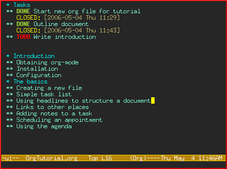
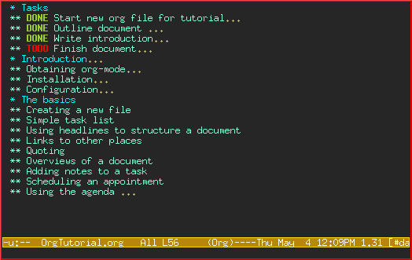
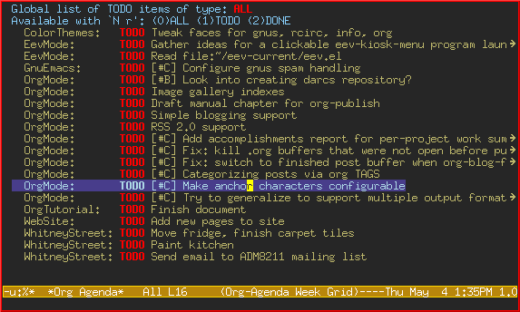
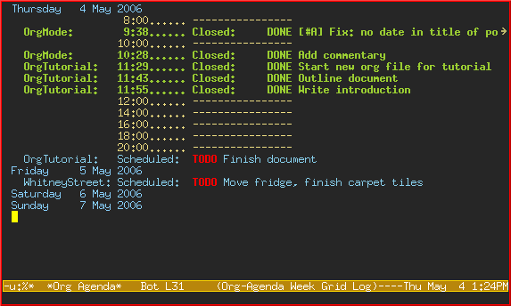

David O’Toole Org tutorial (Spanish Translation)
Esta página es una traducción al español hecha por David Arroyo Menéndez del tutorial original de David O’Toole.
Realizado el día: <24-09-2011>
Introducción
Org-mode es un gestor de información personal y una herramienta de resúmenes para Emacs. Este documento pretende dar al lector una primera impresión de org-mode y enseñar el uso básico con instrucciones paso a paso y mediante pantallazos. No se pretende reemplazar el manual, ya que solo se cubre un subconjunto de las funcionalidades de org-mode.
Este documento también está traducido en Francés, Japonés, Chino, and Coreano. Agradecimientos especiales a los traductores
Obteniendo org-mode
Org-mode es parte de Emacs 22 y 23, así si tiene una versión moderna de Emacs, entonces ya lo tiene.
Si no, se puede descargar desde la web de org-mode, se descomprime y se enlaza el load path de Emacs al directorio lisp de dicha distribución de Org-mode:
(add-to-list 'load-path "PATH_TO_WHERE_YOU_UNPACKED_ORGMODE/lisp")
Activación
Añade lo siguiente a tu .emacs:
(require 'org) (define-key global-map "\C-cl" 'org-store-link) (define-key global-map "\C-ca" 'org-agenda) (setq org-log-done t)
Esto asegurará la carga de org y la definición de algunas combinaciones de teclas. Se mostrará qué hacen «org-store-link» y «org-agenda» más adelante en este mismo documento
Una cosa más —es mejor definir un directorio separado dónde tus ficheros org se almacenarán. Yo recomiendo usar ~/org.
Lo básico
Esta sección ilustra el uso básico de org-mode mostrando cómo yo usé org-mode para crear este documento.
Creando un nuevo fichero
Si se configuró el fichero de inicialización de Emacs como se sugería arriba, Emacs debería entrar en org-mode siempre y cuando se visite o cree un fichero con la extensión «.org»
Yo cree un nuevo fichero llamado «OrgTutorial.org» y ví el indicador «Org» en el modeline, mostrando que había entrado en org-mode.
Lista simple de tareas
Primero introduje un headline llamado «Tasks» (Tareas) para almacenar la tareas dentro. Esto no es necesario pero, con frecuencia, es conveniente, especialmente si se quiere almacenar tareas separadas del cuerpo del documento que se está escribiendo
Los títulos de primer nivel empiezan con una estrella; los de segundo nivel con dos estrellas, y así.
En org-mode, los ítems TODO (tareas no hechas) son siempre títulos. Se introdujo un ítem TODO para «Start new org file for tutorial» (Empezar un nuevo fichero org tutorial).

Esto es un poco tonto, porque ya se ha iniciado un nuevo fichero. Así, márquese el ítem TODO como ítem DONE (tarea ya realizada) moviendo el cursor a esta esa línea y pulsando C-c C-t, que ejecuta el comando org-todo.
Aquí está el resultado:

Nótese cómo org-mode usa una marca de tiempo para grabar cuando un ítem TODO fué cerrado.
Permítase añadir algunos ítems TODO más. Posicione el cursor en la siguiente línea y pulse M-shift-RET para llamar a org-insert-todo-heading. Se puede pulsar varias veces y añadir varios TODOs.

Usando títulos para estructurar un documento
Con frecuencia el mejor camino para organizar las ideas es un esquema. El siguiente paso es hacer un esquema de los diferentes asuntos del tutorial. Haciendo esto, se rompe la intimidatoria página en blanco en una serie de pequeños trozos menos intimidatorios. Llegando entonces, a ser sencillos de rellenar.
Recuerda que una estrella da comienzo a una cabecera de primer nivel, y dos estrellas dan comienzo a una cabecera de segundo nivel. Si se necesita un anidamiento más profundo, ¡usa tres o más estrellas!
Aquí está lo que se ve después de hacer un esquema del documento:

Nótese que se marcó «Outline document» (Esquematizar el documento) como DONE después de finalizar.
Rellenando secciones
Fácilmente se puede añadir texto un cuerpo de texto debajo de cualquier título.

Enlaces a otros lugares
En la sección «Obteniendo org-mode» se necesita proveer un enlace al sitio web de org-mode. Una sintaxis especial de corchetes es usada al enlazar:
[[enlace][descripción]]
Observa cómo se escribió el enlace y descripción, dejando abierto el último corchete:

Entonces cuando yo escribo el último corchete, el enlace «se encoge» y simplemente muestra la descripción.

Pruebe a mover el cursor hasta el enlace y presione C-c C-o para org-open-at-point (Abrir el enlace),
También se puede enlazar a ficheros locales. Pruebe visitando otro fichero —por ejemplo, su fichero de inicialización de emacs. Entonces pulse C-c l para llamar a org-store-link. Se verá un mensaje acerca de que un enlace fué almacenado para la posición actual en el fichero que se está visitando.
Entonces vuelva a su buffer org-mode y pegue el enlace usando C-c C-l para llamar a org-insert-link. (Puede necesitar presionar las teclas de flechas para mover el scroll hasta encontrar el enlace grabado.)
Visión de conjunto del documento
En este momento, el documento es largo y no se puede ver entero en una sola pantalla. Org-mode hace fácil tener una visión de conjunto del documento presionando shift-TAB.

Nótese que solo se muestran los títulos de primer nivel. Se puede pulsar shift-TAB de nuevo para mostrar todos los títulos o cabeceras, incluyento ítems TODO:

Pulsa de nuevo para mostrar una vista normal del documento, con los cuerpos de cada sección:

Añadiendo notas a una tarea
Se puede poner tanto texto como se quiera bajo una cabecera de un ítem TODO. De hecho, se puede tener incluso subcabecera bajo un TODO, ¡y TODOs con TODOs!
Siendo capaz de anotar tareas hace fácil recoger enlaces relacionados y pensamientos asociados a una tarea. Siendo capaz de anidar tarear es bueno para modelar flujos de trabajo — con bastante frecuencia, una tarea larga is dividida en pequeñas subtareas que se pretende marchar según se hagan.
Saboreando funcionalidades avanzadas
Antes de finalizar, se verá brevemente las funcionalidades de org-mode relativas a lista global de TODOs, planificación y agenda. Éstas son usadas para combinar ítems TODO desde diferentes ficheros org mostrándose de un modo priorizado y cronológico. También puede usarse para ver qué tareas se completaron y cuando.
Configuración
Primero debe asignarse la variable org-agenda-files de tal modo que org-mode conocerá qué ficheros buscar para TODOs e ítems planificados
Imagínese que ya tiene varios ficheros org —por ejemplo, uno para trabajar, uno para casa y uno para clase.
En tal caso, se añadiría lo siguiente al fichero de inicialización de emacs:
(setq org-agenda-files (list "~/org/trabajo.org"
"~/org/clase.org"
"~/org/casa.org"))
La lista TODO global
Presione C-c a t para introducir la lista global todo. Org-mode escaneará los ficheros en org-agenda-files y presentará un listado de todas los ítems TODO abiertos:

Se puede mover el cursor alrededor de diferentes ítems todo, y púlsese «t» para marcar un ítem como DONE (hecho), o pulse RET para saltar al fichero fuente donde el TODO está localizado.
Planificando tareas y usando la agenda
Imagine que se quiere planificar «Finish document» (Finalizar documento) para hoy. Entonces, se mueve el cursor a la línea de después del ítem TODO llamado «Finish document» y se pulsa C-c C-s para ejecutar org-schedule. El calendario aparece, y se puede introducir o hacer click en la fecha deseada:

Una vez se selecciona la fecha, org-mode inserta una marca de fecha planificada después del ítem TODO:

Ahora se guarda el fichero y se pulsa C-c a a para org-agenda. Se mostrará una vista de los ítems planificados para esa semana:

Ahora presione «l» (minúscula L) para activar la vista de log. Esto muestra por pantalla todas las tareas finalizadas y sus fechas de terminación.

Despedida
Éste ha sido solo un breve paseo por org-mode. Más excitantes funcionalidades aguardan en el manual online de org-mode.